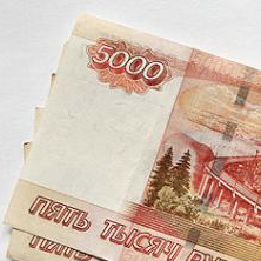

Написание этого поста заняло 2 часа. На чтение вы потратите 10 минут. Это будет одно из самых выгодных вложений десяти минут в вашей жизни.
Мне нравится фильм «Время» с Джастином Тимберлейком. Можно по-разному оценивать драматургию фильма или игру актёров, но мне он нравится главной идеей.
Именно время является основным ресурсом в жизни человека. И, хотя в экономической теории эквивалентом стоимости других товаров и услуг являются деньги, мне кажется, что теория не совсем верна. Настоящим честным эквивалентом является именно время.
Чтобы заработать деньги мы тратим время, и наличие самих денег всё только запутывает.

Чтобы понять истинную ценность вещей их тоже можно оценивать не в деньгах, а во времени.
Допустим, ваша заработная плата составляет 30000 рублей в месяц. Таким образом, в час жизни вы зарабатываете 30000 рублей / 30 дней / 24 часа = 42 рубля. Теперь это ваш новый курс доллара. 42 рубля за час. Попробуйте измерять покупки, используя его.
Вы идёте в магазин, и видите там новый телевизор. На ценнике написано, что на него действует скидка и цена вообще привлекательна — 19499 рублей. Считаем, сколько это будет в нашей «валюте» 19499/42 = 464 часа. Новый телевизор стоит 464 часа вашей жизни. Условно говоря, вы умрёте на 464 часа раньше, но с телевизором. Тут даже можно не рассматривать, что телевизор поможет прикончить вам ещё несколько тысяч часов.
Фитнес браслет из Китая обойдётся не в 1000 рублей, а в сутки вашей жизни. Бутылка недорогого вина — 8 часов.
Не все покупки, конечно, сделают вашу жизнь короче. Например, стиральная машина, хоть и продаётся за 535 часов, поможет вам сэкономить (заработать) больше часов, чем стоит. Если не сломается. Такие покупки — экономически выгодное вложение валюты-времени.

Стоимость автомобиля – 1,35 млн рублей (средневзвешенная цена нового легкового автомобиля в России, по данным аналитического агентства «Автостат»). Таким образом, средний легковой автомобиль стоит 32142 часа. В среднем, 1/19 вашей жизни.
Вещь, купленная в кредит, сокращает вашу жизнь ещё больше.
Несомненно, вы можете зарабатывать в час вашей жизни больше, чем 42 рубля. Тогда все цены для вас будут ниже. Хотя, зарабатывая больше, вы, наверняка, станете выбирать вещи подороже.
Просто всегда нужно помнить, что время, в отличие от условно бесконечных денег, обязательно когда-то закончится.
Каждый из нас получает при рождении в России в среднем около 620 000 часов. Остаётся только правильно распорядиться этим стартовым капиталом.